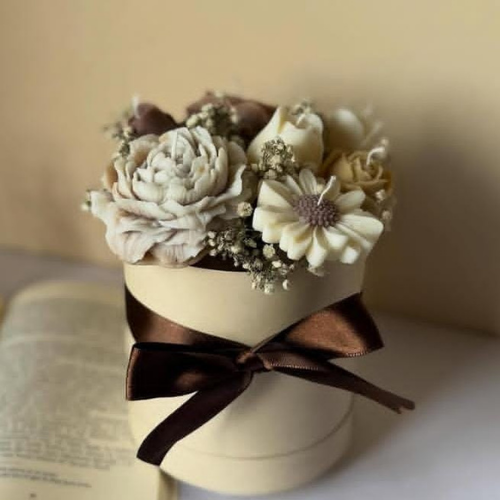

En Aromélie, creemos en el poder de los aromas para transformar
espacios y emociones. Nuestra misión es crear velas artesanales que
combinen fragancias naturales, diseño elegante y una elaboración
consciente. Cada vela es elaborada a mano con dedicación, utilizando
ingredientes sostenibles y esencias cuidadosamente seleccionadas para
brindar momentos de calma, inspiración y armonía. Aspiramos a ser
parte de tus rituales diarios, iluminando con suavidad y perfumando
con intención cada rincón de tu vida.
Nuestros productos estrella
Descubre nuestra colección de velas aromáticas, cada una diseñada para
ofrecer una experiencia sensorial única. Desde la calidez de la Vela
Aromática 1 hasta la frescura de la Vela Aromática 3, cada vela está
hecha con amor y atención al detalle.
Vela oso amorosoVela rosas de verano

Vela ramo primaveral
Estamos en Cochabamba !
Aromélie se encuentra en el corazón de Cochabamba, donde la
tradición y la modernidad se unen para crear un ambiente perfecto para
disfrutar de nuestras velas. Visítanos y descubre el encanto de
nuestras fragancias en persona.